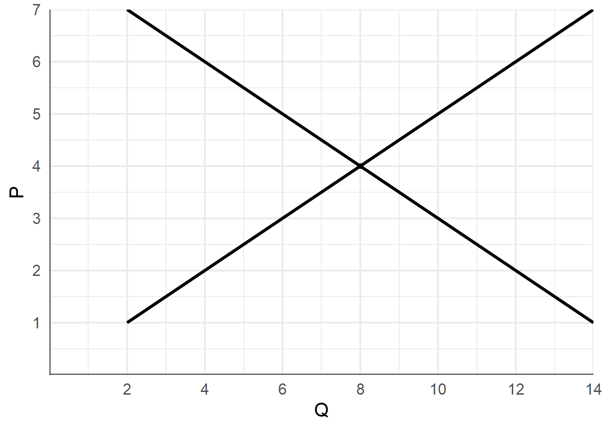

Oferta y Demanda Grafique el efecto de los siguientes shocks en el equilibrio del mercado de galletitas:
- La obligación de poner un octógono advirtiendo que tiene demasiada azúcar.
- Una campaña publicitaria exitosa.
- Un reducción en el precio de los bizcochos.
- Un aumento en el precio la leche chocolatada.
Dibuje el diagrama de oferta y demanda antes y después de la ocurrencia de cada shock. Explique el efecto sobre las variables endógenas.
Salario mínimo La siguiente gráfica muestra el equilibrio en el mercado de trabajadores de la construcción.

¿Cuál es el equilibrio si el gobierno no interviene?
Si el gobierno impone un salario mínimo de $3, ¿cuál será el nivel de empleo? ¿Esta política genera desempleo?
Si el gobierno impone un salario mínimo de $6, ¿cuál será el nivel de empleo? ¿Esta política genera desempleo?
Impuestos La siguiente gráfica muestra el equilibrio en el mercado de hamburguesas.

Si el gobierno decide imponer un impuesto de $8 por unidad:
- Graficar el nuevo equilibrio en el mercado.
- Calcular los precios y las cantidades en el nuevo equilibio.
- Calcular la recaudación del impuesto. ¿Sobre quién recae la mayor parte del impuesto, sobre los consumidores o los productores?
- Calcular la pérdida de eficiencia ocasionada por el impuesto.
Utilidad Marginal
Explicar la diferencia entre la utilidad total y la utilidad marginal. Si un consumidor consume solo dos bienes, ¿qué relación tienen sus utilidades si el consumidor maximiza su utilidad total?
| Bananas | Umg B | Manzanas | Umg M |
|---|---|---|---|
| 1 | 30 | 1 | 40 |
| 2 | 24 | 2 | 34 |
| 3 | 18 | 3 | 24 |
| 4 | 12 | 4 | 16 |
| 5 | 6 | 5 | 8 |
| 6 | 0 | 6 | 0 |
Un consumidor tiene un presupuesto de $10. La tabla anterior muestra la utilidad marginal para cada cantidad de bananas y manzanas consumidas.
Si el precio de las bananas es $1 y el de las manzanas $2 ¿cuál será la utilidad marginal por peso gastado para las cantidades de la tabla? ¿cómo asigna su presupuesto entre ambos bienes?
Si el precio de las bananas sube a $2, ¿cómo cambia la utilidad marginal por peso? ¿cuál será la nueva combinación de manzanas y bananas que comprará este consumidor?
Costos El siguiente gráfico muestra las curvas de costos de un productor de soja.

- Explique la relación entre la curva de Costo Marginal y la de Costo Medio.
- Hacer una tabla con la cantidad producida si el precio es $1, $2 y $3. ¿Cómo se llama esta curva?
- Explicar si la empresa tiene resultados económicos positivos o negativos para cada uno de estos precios.